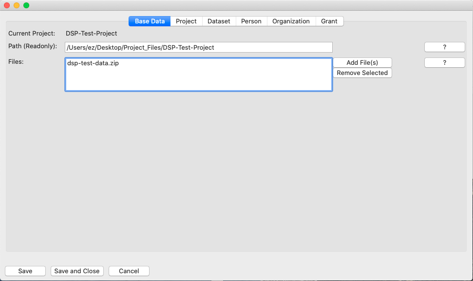

Tabbed Windows Overview
All window tabs share some similarities but the "Base Data" tab is slightly simpler than the other tabs.


Similarities
All tabs have a frame and a bottom that works alike. There are three buttons "Save", "Save and Close", and "Cancel". The button "Save" allows you to save your entries and carry on on the same window, whereas the button "Save and Close" closes the tabbed window after saving the data. "Cancel" simply closes the tabbed window without saving data.
All tabs share the same layout: On the left side there is the title of form field, right to it there are the fields to enter information.
On the right hand of the window there are buttons with a question mark. If you click this button a small window opens the "Help" with a brief explanation and an example for the field it is attached to.
Differences
In all tabs but the "Base Tab" there is an additional column to the far right with a flag indicating whether the form field is mandatory or optional. If the field is empty or formally not filled in correctly the type colour is red in case the field is marked as mandatory, or black if flagged as optional.
As soon as the field has been filled in correctly, the type colour changes to green. This applies for mandatory and optional fields.
Don't see the Save Button anymore?
Drag the tabbed window bigger.
For further detail go to the specific tab documentation.